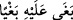

âyet nazil oldu. Rasûlullah (s.a.) de onlara dönüp bu âyet-i kerîmeyi okudu ve aralarını
düzeltti.[180] Eğer denirse ki, Abdullah b. Übey münafıktı, oysa âyet müminlerden iki
taife ile alâkalı. Deriz ki: Tâifelerden biri Abdullah b. Übey ve aşiretinden ibarettir.
Onların hepsi münafık değildi. Dolayısıyla âyet onlardan mümin olanları da içerisine
alır. Ya da müminlerden murad, -ister gerçekten isterse sadece iddiâda mümin olsun,-
mümin olduğunu ızhar eden kimselerdir.
Âyetin sebeb-i nüzûlü ile alâkalı başka şeyler de söylenmiştir. Rivayetlerin hepsi
sahih olabilir. Bu durumda âyet her birinden sonra inmiştir, denilebilir.
İbn Bahr der ki: Savaş, ayakkabı ve elle olmaz. Böylesi bir savaş ancak gelecekte
olacaktır. Fakîr [Bursevî] der ki: Katli, ruhun çıkmasına sebep olan fiil şeklinde
açıklamışlardır. Savaş âleti, meselâ, velevki tahta olsun keskin bir şey veya parçalayıcı
herhangi bir şey ile vurmak fiili de bir katildir. Şüphe yok ki hurma dalları böylesi
keskin bir tahtadır. Ayakkabıya gelince bazıları keskin tahtadan yapılır. Nitekim bugün
bazı bedevilerin ayakkabılarında bu durumu görüyoruz. Savaş (kıtâl); bazen dövüşmek,
vuruşmak anlamında mecaz olarak kullanılabilir. ‘Kıtal’ kelimesi Hz. Peygamber (s.a.)
zamanında mutlak olarak gerçekleşmiştir. Âyetteki şart edâtı ise müminler arasındaki
savaşın ancak farazî bir şey olması gerektiğine işaret eder. Sebebin husûsî oluşu
hükmün umûmî olmasına mâni olmadığı için âyet kıyamete kadar bütün Müslümanları
içine alır. Bir savaş mukadder olursa ona göre davranılması gerekir. Bunu iyi anla!
“Şayet biri” haksız bir şekilde haklı olan “ötekine saldırırsa” ve de kendine nasihat
fayda vermezse “Allah’ın buyruğuna dönünceye kadar saldıran tarafla savaşın.”
Kâmûs’ta der ki: Âyette ‘saldırmak’ anlamına gelen (__WORD__) fiili haddi aşmak demektir. (__WORD__) denilir ve ‘büyüklendi’, ‘zulmetti’, ‘haktan ayrıldı’ ve ‘küstahlık yaptı’
mânâsı kast olunur. (__WORD__) kelimesinin aslı hakkı olmayan bir şeyi talep etmek demektir.
Çünkü (__WORD__) kelimesi (__WORD__) ile aynı anlamdadır. ‘Dönmek’ anlamına gelen (__WORD__)
kelimesi ise övülen bir duruma dönmektir. “Allah’ın buyruğuna” mânâsına gelen (__WORD__) ifadesindeki (__WORD__) kelimesi, Cenâb-ı Hakk’ın Azîz Kitabındaki musâlaha/barış
yapma ve düşmanlığı ortadan kaldırma hükmü ya da Cenâb-ı Hakk’ın emrettiği husus
yani itaat anlamındadır. Bu itaat anlamına şu âyet-i kerime delâlet eder: “Ey iman
edenler! Allah’a itaat edin. Peygamber’e ve sizden olan ulülemre (idarecilere) itaat
edin.” (Nisâ 4/59) Birinci mânâya göre (__WORD__) kelimesinin çoğulu (__WORD__) iken; ikinci
mânâya göre çoğulu (__WORD__)’dir.
Arapçada gölgeye (__WORD__) denilmiştir. Çünkü güneş kendisini ortadan kaldırdıktan sonra
tekrar geri gelir. Güneş yükseldikçe gölge zevâl bulur, yok olur. Bu durum, güneş gün
ortasına gelinceye kadar sürer. Güneş o noktadan zâil olup alçalmaya başlayınca gölge
geri dönüp zuhûr etmeye başlar. Güneşin bu vakitte o noktadan zevâli gölgenin kaybolan
kısmının geri gelmesine sebep olunca gölge zevâle muzâf kılınmış ve ‘zevâl gölgesi’
denilmiştir. Yine ganimete de kâfirlerden Müslümanlara döndüğü için ‘fey’ denilmiştir.